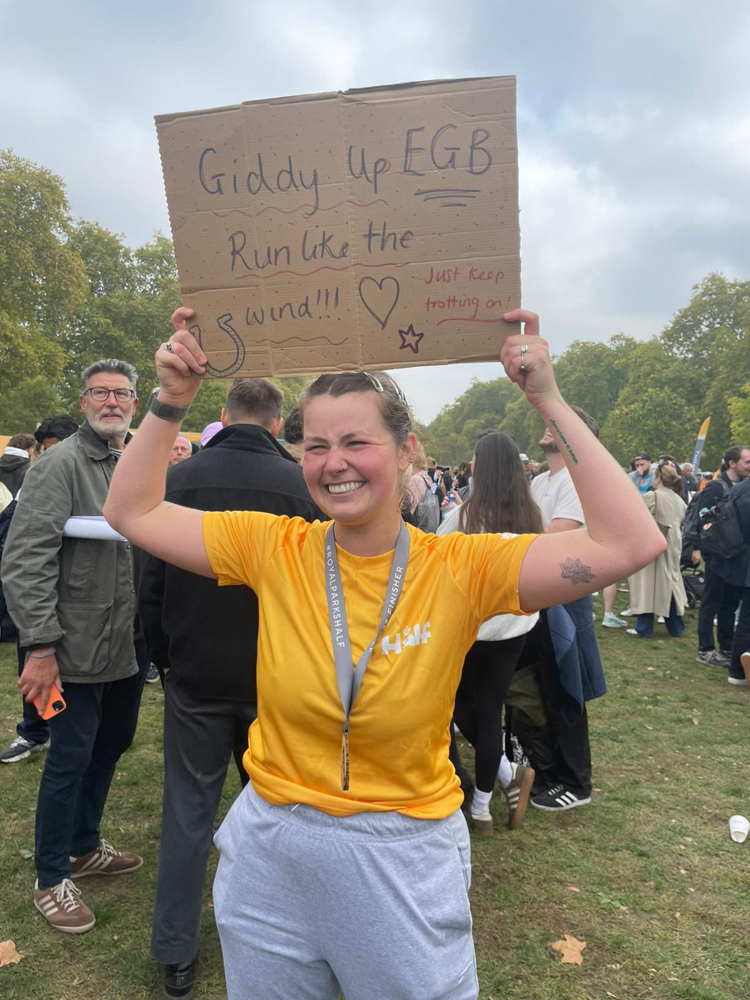
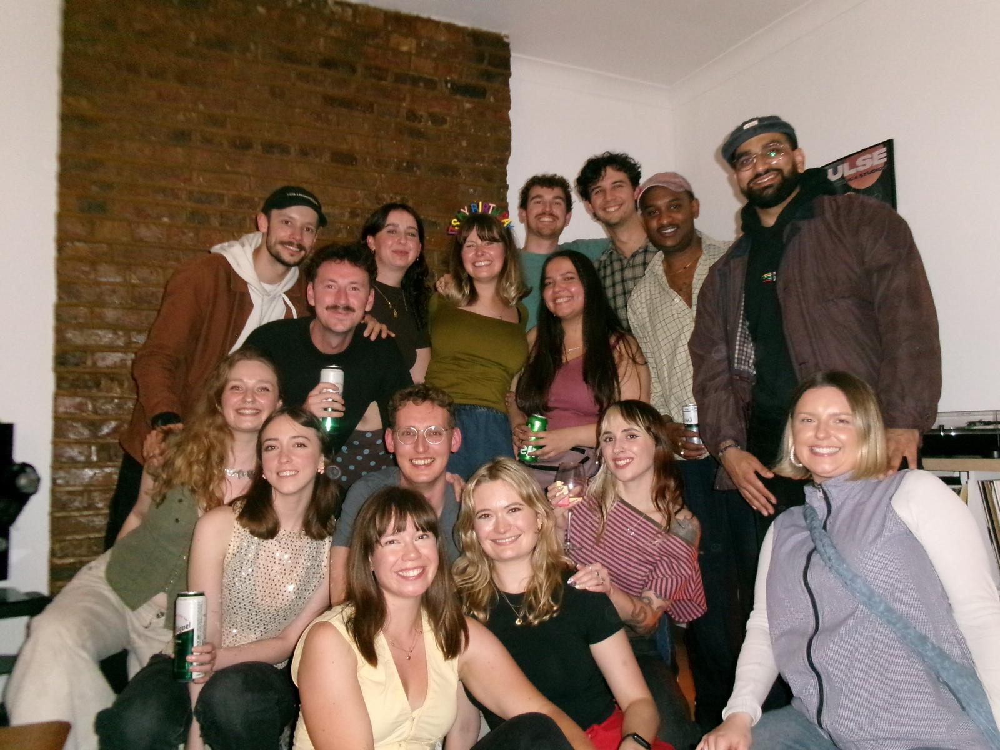
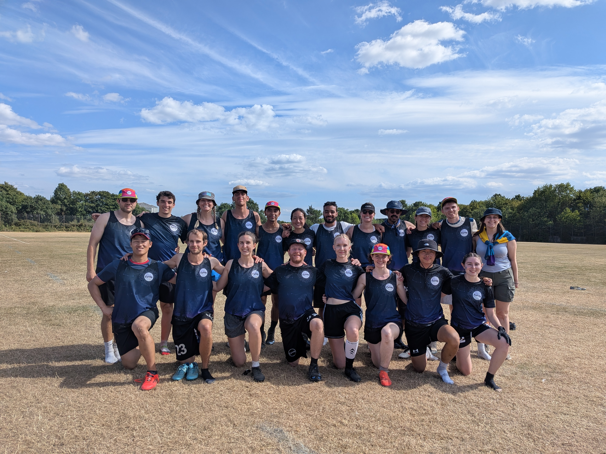
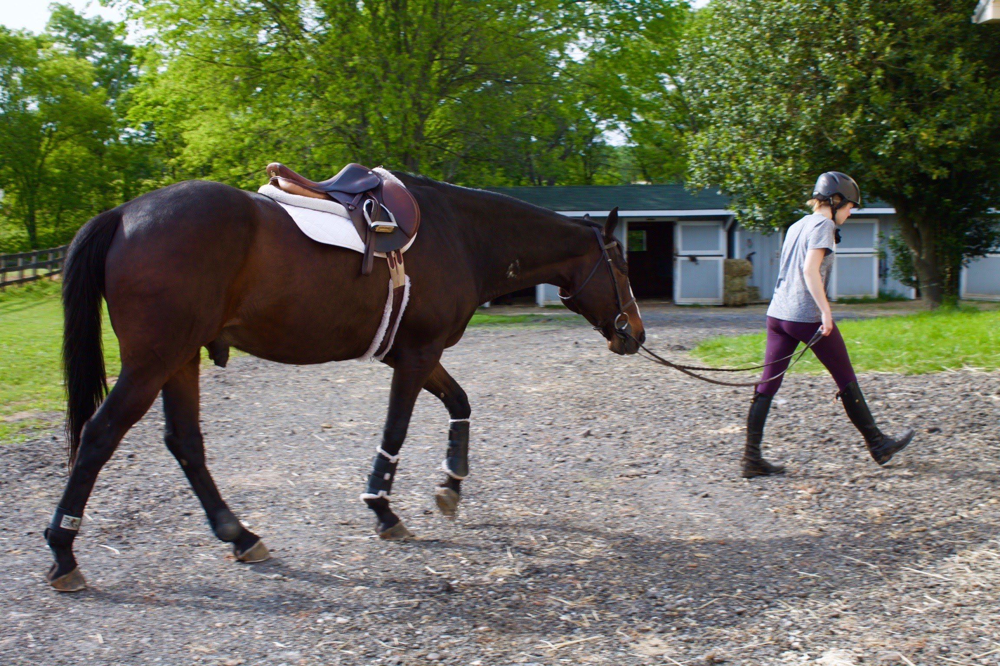
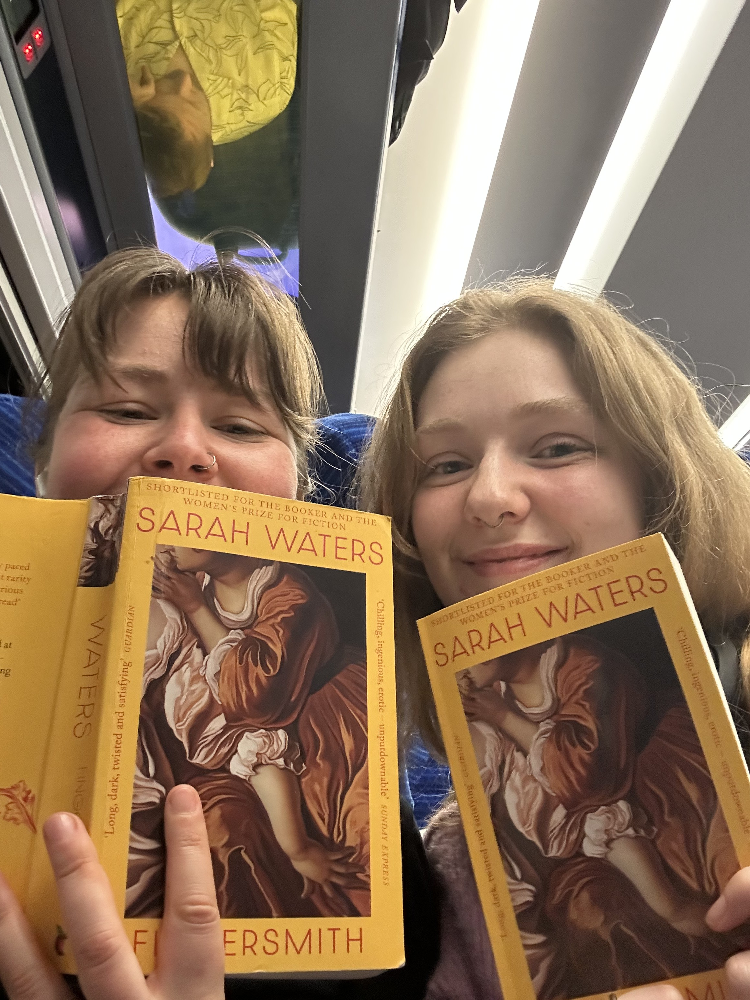
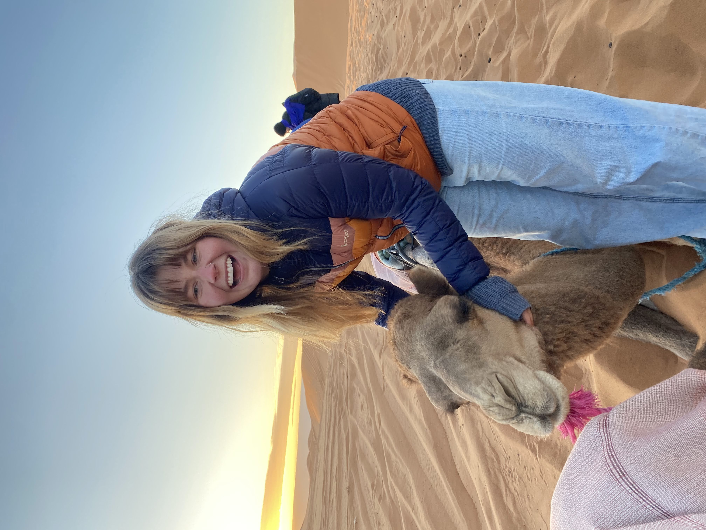

Running
Running has become one of my favourite ways to challenge myself, spend time outdoors, and see how far I've come. I've enjoyed training for longer-distance races and keeping up the habit alongside my research.
 EMERY GRAHILL-BLAND
EMERY GRAHILL-BLAND

Science isn't the only thing that keeps me busy. Outside of research, I try to balance my interest in sports with some creative hobbies.

Running has become one of my favourite ways to challenge myself, spend time outdoors, and see how far I've come. I've enjoyed training for longer-distance races and keeping up the habit alongside my research.

I started playing ultimate frisbee at UCLA, and it's continued to be a wonderful way to meet people, build a community, and stay active. I find it a great way to meet people when I've move to new cities.

I grew up riding horses, and competed when I was in school. Though I don't ride regularly now, I stil love to spend time with horses and really all animals when I have the chance.

I love reading, and have recently started a book club among my friends. I also like to write, and used to maintain a fun travel blog for family and friends. Now, I mainly write short fiction and poetry when I have the time.

I love to travel, and try to adventure solo and with friends whenever I can.